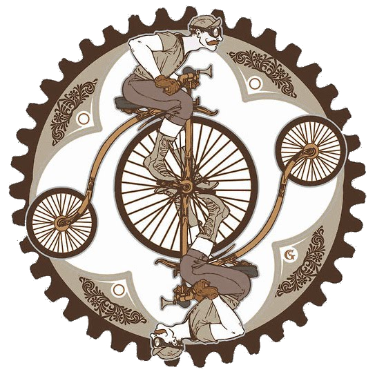

Using the Cyclus Preprocessor¶
A key part of the Cyclus agent and module development infrastructure is
a Cyclus-aware C++ preprocessor called Before we continue there are a couple of noteworthy points about
Without further ado, let’s dive in! |  |
Pragma Cyclus¶
The preprocessor functions by defining a suite of Cyclus-directives that
cycpp picks up (but that plain old cpp ignores). These all start
with the prefix #pragma cyclus and fall into one of two broad categories:
- Annotation directives and
- Code generation directives.
The annotation directives allow you specify information and metadata (documentation, default values, maximum shape sizes, etc.) about your agents. The code generation directives replace themselves with C++ code inside of the agents based on the annotations provided. The use of these directives is entirely optional. However, in their absence you must implement the corresponding agent API yourself.
Annotation Directives¶
Cyclus agents are based on the notion of state variables. These are member variables of your agents whose values (should) fully determine the state of the your agent at any time step. State variables are important because they are what is written to and read from the database, they may be specified in the input file and have an associated schema, and they define the public interface for the agent.
Thus, the most important annotation directive is the state variable directive. This must be written within the agent’s class declaration and applies to the next member variable declaration that it sees. This directive not only defines the annotations for a variable, but also declares it as being a state variable. It has the following signature:
State variable annotation signature:
#pragma cyclus var <dict>
Here, the <dict> argument must evaluate to a Python dictionary (or other mapping).
For example,
State variable annotation example:
#pragma cyclus var {"default": 42.0, "units": "n/cm2/s"}
double flux;
These two lines declare that the member variable flux is in fact a state
variable of type double with the given metadata. The keys of this dictionary
may be anything you desire. Though because they are eventually persisted to
JSON the keys must be strings. Certain keys have special semantic
meaning. Furthermore, there are two keys - type and index - that are set by
cycpp itself and should not be specified explicitly. State variables may have any
C++ type that is allowed by the database backend that is being used. For a listing of
valid types please refer to the Database Types page. Table I. Special State Variable Annotations
contains a listing of all special keys and their meanings.
| key | meaning |
|---|---|
| type | The C++ type. Valid types may be found on the Database Types
page. READ ONLY: Do not set this key in
#pragma cyclus var {...} as it is set automatically by
cycpp. Feel free to use this downstream in your class or in a
post-process. |
| index | Which number state variable is this, 0-indexed.
READ ONLY: Do not set this key in
#pragma cyclus var {...} as it is set automatically by
cycpp. Feel free to use this downstream in your class or in a
post-process. |
| default | The default value for this variable that is used if otherwise unspecified. The value must match the type of the variable. |
| internal | True if this state variable is only for
archetype-internal usage. Although the variable will still
be persisted in the database and initialized normally (e.g.
with any default), it will not be included in the XML schema
or input file. |
| shape | The shape of a variable length datatypes. If present this must
be a list of integers whose length (rank) makes sense for this
type. Specifying positive values will (depending on the
backend) turn a variable length type into a fixed length one
with the length of the given value. Putting a -1 in the
shape will retain the variable length nature along that axis.
Fixed length variables are normally more performant so it is
often a good idea to specify the shape where possible. For
example, a length-5 string would have a shape of [5] and
a length-10 vector of variable length strings would have a
shape of [10, -1]. |
| doc | Documentation string. |
| tooltip | Brief documentation string for user interfaces. |
| units | The physical units, if any. |
| userlevel | Integer from 0 - 10 for representing ease (0) or difficulty (10) in using this variable, default 0. |
| alias | The name of the state variable in the schema and input file.
If this is not present it defaults to the C++ variable name.
The alias may also be a nested list of strings that matches
the C++ template type. Each member of the hierarchy will
recieve the corresponding alias. For example, a
[std::map, int, double] could be aliased by
['recipe', 'id', 'mass']. For maps, an additional item
tag is inserted. To also alias the item tag, make the top
alias into a 2-element list, whose first string represents
the map and whose second string is the item alias, e.g.
[['recipe', 'entry'], 'id', 'mass'] |
| uilabel | The text string a UI will display as the name of this input on the UI input form. |
| uitype | The type of the input field in reference in a UI,
currently supported types are; incommodity, outcommodity,
commodity, range, combobox, facility, prototype, recipe, nuclide,
and none.
For ‘nuclide’ when the type is an int, the values will be read in
from the input file in human readable string format (‘U-235’) and
automatically converted to results of pyne::nucname::id()
(922350000) in the database and on the archetype. |
| range | This indicates the range associated with a range type.
It must take the form of [min, max] or
[min, max, (optional) step size]. |
| categorical | This indicates the decrete values a combobox Type can take. It
must take the form of [value1, value2, value3, etc]. |
| schematype | This is the data type that is used in the schema for input file validation. This enables you to supply just the data type rather than having to overwrite the full schema for this state variable. In most cases - when the shape is rank 0 or 1 such as for scalars or vectors - this is simply a string. In cases where the rank is 2+ this is a list of strings. Please refer to the XML Schema Datatypes page for more information. New in v1.1. |
| initfromcopy | Code snippet to use in the InitFrom(Agent* m) function for
this state variable instead of using code generation.
This is a string. |
| initfromdb | Code snippet to use in the InitFrom(QueryableBackend* b)
function for this state variable instead of using code generation.
This is a string. |
| infiletodb | Code snippets to use in the InfileToDb() function
for this state variable instead of using code generation.
This is a dictionary of string values with the two keys ‘read’
and ‘write’ which represent reading values from the input file
writing them out to the database respectively. |
| schema | Code snippet to use in the schema() function for
this state variable instead of using code generation.
This is an RNG string. If you supply this then you likely need
to supply infiletodb as well to ensure that your custom
schema is read into the database correctly. |
| snapshot | Code snippet to use in the Snapshot() function for
this state variable instead of using code generation.
This is a string. |
| snapshotinv | Code snippet to use in the SnapshotInv() function for
this state variable instead of using code generation.
This is a string. |
| initinv | Code snippet to use in the InitInv() function for
this state variable instead of using code generation.
This is a string. |
Cyclus also has a notion of class-level agent annotations. These are specified by the note directive. Similarly to the state variable annotations, agent annotations must be given inside of the class declaration. They also have a very similar signature:
Note (agent annotation) signature:
#pragma cyclus note <dict>
Again, the <dict> argument here must evaluate to a Python dictionary.
For example,
Note (agent annotation) example:
#pragma cyclus note {"doc": "If I wanna be rich, I’ve got to find myself"}
Unlike state variables, agent annotations only have a few special members. One of
this is vars which contains the state variable annotations!
Table II. Special Agent Annotations contains a listing of all special keys and their meaning.
| key | meaning |
|---|---|
| vars | The state variable annotations, READ ONLY. |
| name | C++ class name (string) of the archetype. READ ONLY. New in version 1.1.1. |
| entity | The kind of archetype that this is based on which class it
inherits from. If this inherits from cyclus::Region,
cyclus::Institution, or cyclus::Facility then this
will be the string ‘region’, ‘institution’, or ‘facility’
respecively. If the class inherits from cyclus::Agent but
does not inherit from the previous three then this will be
the string ‘archetype’. In the class does not even inherit
from cyclus::Agent, then this will be ‘unknown’.
READ ONLY. New in version 1.1.1. |
| parents | List of string class names of the direct superclasses of this archetype. READ ONLY. New in version 1.1.1. |
| all_parents | List of string class names of all the superclasses of this archetype. READ ONLY. New in version 1.1.1. |
| niche | A string which names the group that the achetype belongs to
that defines how it is swappable with other archetypes. If
two archetypes have the same niche then they are partially or
wholly swappable. Niches may overlap and any string may be
used as the niche. Some example niches that are useful to
displaying user interfaces are: reactor, reprocessing,
repository, mine, and others. |
| doc | Documentation string. |
| tooltip | Brief documentation string for user interfaces. |
| userlevel | Integer from 0 - 10 for representing ease (0) or difficulty (10) in using this variable, default 0. |
If you find dictionaries too confining, cycpp also has an exec directive.
This allows you to execute arbitrary Python code which is added to the global
namespace the state variables and agent annotations are evaluated within. This
directive may be placed anywhere and is not confined to the class declaration,
like above. However, it is only executed during the annotations phase of
preprocessing. The signature for this directive is:
Exec signature:
#pragma cyclus exec <code>
The <code> argument may be any valid Python code. A non-trivial example,
Exec example:
#pragma cyclus exec from math import pi
#pragma cyclus exec r = 10
#pragma cyclus var {"default": 2*pi*r}
float circumfrence;
One possible use for this is to keep all state variable annotations in a
separate sidecar *.py file and then import and use them rather than
cluttering up the C++ source code. Such decisions are up to the style of the
developer.
Code Generation Directives¶
Once all of the annotations have been accumulated, the preprocessor takes another pass through the code. This time it ignores the annotations directives and injects C++ code anytime it sees a valid code generation directive.
The simplest and most powerful of the code generators is known as the prime directive. This engages all possible code generation routines and must live within the public part of the class declaration.
The prime directive:
#pragma cyclus
Unless you are doing something fancy such as manually writing any of the agent
member functions that cycpp generates, the prime directive should be all that
you ever need. For example, an agent that does nothing and has no state variables
would be completely defined by the following thanks to the prime directive:
The prime directive example:
class DoNothingCongress : public cyclus::Institution {
public:
DoNothingCongress(cyclus::Context* ctx) {};
virtual ~DoNothingCongress() {};
#pragma cyclus
};
For the times when you wish to break the prime directive, you may drill down into more specific code generation routines. These fit into three broad categories:
- Declaration (decl) directives,
- Definition (def) directives, and
- Implementation (impl) directives.
The decl directives generate only the member function declaration and must
be used from within the public part of the agent’s class declaration. The
def generate the member function definition in its entirety including the
function signature. These may be used either in the class declaration or in
the source file (*.cc, *.cpp, etc.). The impl directives generate
only the body of the member function, leaving off the function signature.
These are useful for intercepting default behavior while still benefiting from
code generation. These must be called from with the appropriate function
body.
The signature for the targeted code generation directives is as follows:
Targeted code generation directive signatures:
#pragma cyclus <decl|def|impl> [<func> [<agent>]]
The first argument must be one of decl, def, or impl, which
determines the kind of code generation that will be performed. The second,
optional <func> argument is the member function name that code should be
generated for. The third and final and optional <agent> argument is the
agent name to code generate for. This argument is useful in the face of
ambiguous or absent C++ scope. The <func> argument must be present if
<agent> needs to be specified.
In the absence of optional arguments there are only:
#pragma cyclus decl
#pragma cyclus def
These generate all of the member function declarations and definitions,
respectively. Note that there is no corresponding #pragma cyclus impl
because function bodies cannot be strung together without the corresponding
signatures encapsulating them.
When the <func> argument is provided the directive generates only the
definition, declaration, or implementation for the given agent API function.
For example the following would generate the definition for the schema()
function.
#pragma cyclus def schema
Table III. Member Function Flags and Their C++ Signatures contains a listing of all available function flags and their associated C++ information.
| func | C++ Signature | Return Type |
|---|---|---|
| clone | Clone() |
cyclus::Agent* |
| initfromcopy | InitFrom(MyAgent* m) |
void |
| initfromdb | InitFrom(cyclus::QueryableBackend* b) |
void |
| infiletodb | InfileToDb(cyclus::InfileTree* tree,
cyclus::DbInit di) |
void |
| schema | schema() |
std::string |
| annotations | annotations() |
Json::Value |
| snapshot | Snapshot(cyclus::DbInit di) |
void |
| snapshotinv | SnapshotInv() |
cyclus::Inventories |
| initinv | InitInv(cyclus::Inventories& inv) |
void |
Lastly, the agent’s classname may be optionally passed the to the directive.
This is most useful in source files for the definition directives. This is
because such directives typically lack the needed class scope. For example,
for the snapshot definition of MyAgent living in mynamespace we would
use:
#pragma cyclus def snapshot mynamespace::MyAgent
Putting It Together¶
Cyclus agents are written by declaring certain member variables to be state variables. This means that they define the conditions of the agent at the start of every time step. State variables are automatically are saved and loaded to the database as well a dictating other important interactions with the kernel.
The preprocessor will generate the desired implementation of key member functions for your agent. The easiest way to obtain these is through the prime directive.
As a simple example, consider a reactor model that has three state variables: a flux, a power level, and a flag for whether it is shutdown or not. This could be implemented as follows:
class Reactor : public cyclus::Facility {
public:
Reactor(cyclus::Context* ctx) {};
virtual ~Reactor() {};
#pragma cyclus
private:
#pragma cyclus var {'default': 4e14, \
'doc': 'the core-average flux', \
'units': 'n/cm2/2'}
double flux;
#pragma cyclus var {'default': 1000, 'units': 'MWe'}
float power;
#pragma cyclus var {'doc': 'Are we operating?'}
bool shutdown;
};
Note that the state variables may be private or protected if desired.
Furthermore annotations may be broken up over many lines using trailing
backslashes to make the code more readable. It remains up to you - the module
developer - to implement the desired behavior and logic in the Tick() and
Tock() member functions. Fancier tricks are available as needed but this
is the essence of how to write Cyclus agents.
Abusing the Cyclus Preprocessor¶
Now that you know how to use cycpp, it is useful to know about some of the
more advanced features and how they can be leveraged.
Scope and Annotations¶
Annotations dictionaries retain the C++ scope that they are defined in even though they are written in Python. This allows state variables to refer to the annotations for previously declared state variables. Since the scope is retained, this allows annotations to refer to each other across agent/class and namespace boundaries.
Because the annotations are dictionaries, the scoping is performed with the
Python scoping operator (.) rather than the C++ scoping operator (::).
For example, consider the case where we have a Spy class that lives in the
mi6 namespace. Also in the namespace is the spy’s Friend.
Furthermore, somewhere out in global scope lives the Spy’s arch-nemesis class
Enemy.
The first rule of scoping is that two state variables on the same class share the same scope. Thus they can directly refer to each other.
namespace mi6 {
class Spy {
#pragma cyclus var {"default": 7}
int id;
#pragma cyclus var {"default": "James Bond, {0:0>3}".format(id['default'])}
std::string name;
};
}; // namespace mi6
In the above, id is used to help define the annotations for name.
Note that from within the annotations, other state variables are the annotation
dictionary that was previously defined. They fo not take on the C++ default value.
This is why we could look up id['default'].
The second rule of scoping is that you are allowed to look into the annotations of other classes. However, to do so you must specifiy the class you are looking into. Looking at our spy’s friend
namespace mi6 {
class Friend {
#pragma cyclus var {"doc": "Normally helps {0}".format(Spy.name['default'])}
std::string help_first;
};
}; // namespace mi6
Here, to access the annotations for Spy’s name we had to use Spy.name,
drilling into the Spy class. Inspecting in this way is not limited by C++
access control (public, private, or protected).
Lastly, if the agent we are trying to inspect lives in a completely different
namespace, we must first drill into that namespace. For example, the spy’s
main enemy is not part of mi6. Thus to access the spy’s name annotations,
the enemy must write mi6.Spy.name. For example:
class Enemy {
#pragma cyclus var {'default': mi6.Spy.name['default']}
std::string nemesis;
};
Inventories¶
In addition to the normal Database Types, state variables may also be declared
with the cyclus::Inventories type. This is a special Cyclus typedef
of std::map<std::string, std::vector<Resource::Ptr> > that enables the
storing of an arbitrary of resources (map values) by the associated commodity
(map key). While the concept of a resource inventory may be implemented in many
ways, the advantage in using the cyclus::Inventories is that the Cyclus
kernel knows how to save and load this type as well as represent it in RNG.
Inventories may be used as normal state variables. For example:
#pragma cyclus var {'doc': 'my stocks'}
cyclus::Inventories invs;
It is therefore hightly recommended that you store resources in this data structure.
State Variable Code Generation Overrides¶
A powerful feature of most of the code generation directives is that the C++ code that is created for a state variable may be optionally replaced with a code snippet writing in the annotations. This allows you to selectively define the C++ behavior without the need to fully rewrite the member function.
A potential use case is to provide a custom schema while still utilizing all other
parts of cycpp. For example:
#pragma cyclus var {'schema': '<my>Famcy RNG here</my>'}
std::set<int> fibonacci;
This will override the schema only for the Fibonacci state variable. For a listing of all code generation functions that may be overridden, please see Table I. Special State Variable Annotations.
Implementation Hacks¶
The impl code generation directives exist primarily to be abused. Unlike
the def directives, the implementation directives do not include the
function signature or return statement. The downside of this is that you must
provide the function signature and the return value yourself. The upside is
that you may perform any operation before & after the directive!
For example, suppose that we wanted to make sure that the flux state variable on the Reactor agent is always snapshotted to the database as the value 42. However, we did not want to permanently alter the value of this variable. This could be achieved through the following pattern:
void Reactor::Snapshot(cyclus::DbInit di) {
double real_flux = flux; // copy the existing flux value.
flux = 42; // set the value to wat we want temporarily
// fill in the code generated implementation of Shapshop()
#prama cyclus impl snapshot Reactor
flux = real_flux; // reset the flux
}
There are likely much more legitimate uses for this feature. For a complete listing of the member function information, please see Table III. Member Function Flags and Their C++ Signatures.
Custom Schema & Initialization¶
Suppose that you would like for the schema for a state variable to be different
than the default behavior provided by cycpp. Or perhaps you would like more
sophisticated input validation than can is provided by XML and RelaxNG for a
state variable. This may be easily done by supplying the state variable annotation
keys schema and infiletodb. These allow you to inject code snippets
pertaining to the state variable without interfering with the rest of the
code generation.
For example, let’s say that we have an integer state variable called
material_identifier that we know always should be even. This name is
a bit long to make users type in, so we would prefer to expose this in the
input file as matid. The RNG snippet that you would use for the schema
is thus:
{'schema': '<element name="matid">' \
' <data type="int" />' \
'</element>'}
You can change the data type or any other valid RNG here.
Note
Whenever a state variable name is changed in the schema, you
must supply an accompanying infiletodb.
Providing a custom infiletodb is slightly more complicated because you
must give C++ snippets for reading from the input file and for persisting to
the database. The value for infiletodb is thus not a simple string
but a dict that has read and write keys. Continuing with the
example we can ensure that matid is even after it has been read in.
Here, we do not change the name of the state variable on the agent in
memory or in the database.
{'infiletodb': { \
'read': 'material_identifier = cyclus::Query<int>(tree, "matid");\n' \
'if (material_identifier%2 == 1)\n' \
' material_identifier++;\n', \
'write': '->AddVal("material_identifier", material_identifier)\n' \
}}
For more examples and explanation of what the InfileToDb() function
does please refer to other code generated samples and refer to other parts
of the documentation.
Pulling this all together, we can write our custom schema and initialization
as follows:
#pragma cyclus var {'schema': '<element name="matid">' \
' <data type="int" />' \
'</element>', \
'infiletodb': { \
'read': 'material_identifier = cyclus::Query<int>(tree, "matid");\n' \
'if (material_identifier%2 == 1)\n' \
' material_identifier++;\n', \
'write': '->AddVal("material_identifier", material_identifier)\n' \
}\
}
int material_identifier;
Other state variable annotation keys allow you to provide code snippets in much the same way.


{kind=link}